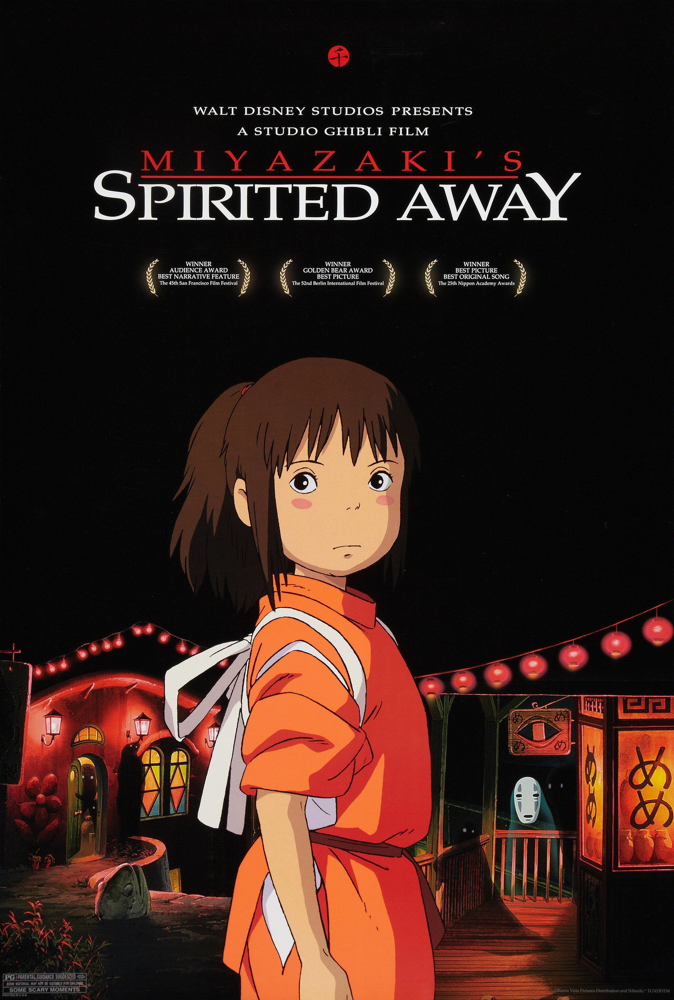

Spirited Away follows Chihiro, a 10-year-old girl who moves to a new town with her parents. On the way,
they discover what appears to be an abandoned amusement park, which is actually a gateway to a mysterious spirit world.
Chihiro's parents eat food meant for the spirits and are magically transformed into pigs.
Trapped in this strange world, Chihiro must find a way to save them and return home.
She begins working at a bathhouse run by the powerful witch Yubaba, where she meets several important characters, including Haku,
a mysterious boy who helps her, and No-Face, a lonely spirit whose behavior becomes increasingly dangerous.
As Chihiro grows more courageous and resourceful, she discovers the truth about Haku's identity and finds a way to break the spell affecting her parents.
Ultimately, she passes Yubaba's test and is reunited with her parents, who have returned to normal.
Main themes: growing up, courage, identity, greed, compassion, and the importance of remembering who you are.
Rumi Hiiragi — Chihiro Ogino
Miyu Irino — Haku
Mari Natsuki — Yubaba / Zeniba
Bunta Sugawara — Kamaji
Yasuko Sawaguchi — Chihiro's mother
Takuya Kimura — Chihiro's father
Tsunehiko Kamijō — Aniyaku
Takehiko Ono — Bandai-gaeru
Akio Nakamura — Kaonashi (No-Face)
Rotten Tomatoes: 96% from 226 critics, with a 96% audience score from 250,000+ ratings.
Metacritic: 96/100 from 41 critics, indicating “universal acclaim.”
IMDb: 8.6/10 from roughly 987,000 user ratings.
Official Movie Website - imdb
Official Movie Website - RottenTomatoes